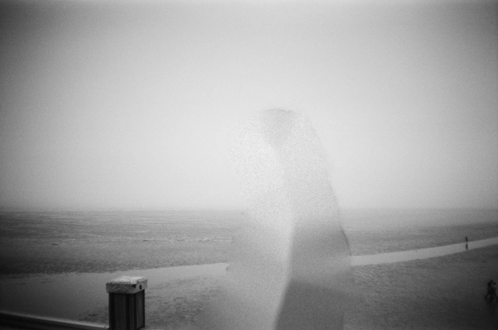
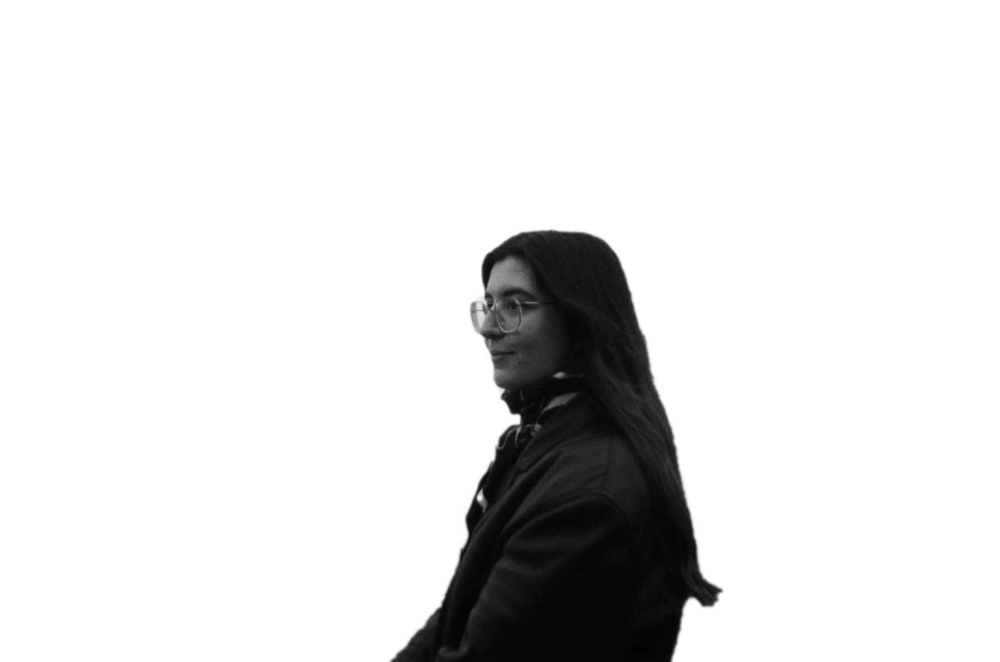

About Felicitas Ferch


I'm Felicitas Ferch, an interaction designer working with tangible and material interfaces. I like to build things people can touch, shape and talk to: a clay 3D printer controlled by hand gestures, an installation in which visitors shape objects by touching water, a system for conversing with an AI by lifting stones. I'm drawn to the place where the analog and the digital meet, through physical computing, real-time systems and craft.
I studied Communication Design in Würzburg (B.A., 2024) and am now finishing my M.A. in Design & Future Making at Pforzheim University. Research has become an important part of my work: first at a design research center in Würzburg, then on the project Human AI with Fraunhofer IIS, which won Designer in Lab 2023.
Alongside my studies I work as graphic design support at Fraunhofer IAPT and take on freelance design projects. In 2026 I spent a semester at Hongik University in South Korea. In September I supported the course Generative Objects at Pforzheim University as a research assistant, introducing students to clay 3D printing.
Experience
- Freelance designergraphic design, corporate identity development, animation, social media for clients, mainly small brands and Fraunhofer
- Research assistant, Pforzheim Universitycourse Generative Objects, clay 3D printing
- Working student, Fraunhofer IAPTgraphic design and communication (posters, flyers, animation, social media, trade fair support)
- Designer, Fraunhofer IISresearch project Human AI, winner of Designer in Lab 2023; jury member of Designer in Lab 2025
- Animation designer (freelance), Fraunhofer IIStwelve animations for a study on the use of AI in medical contexts
- Intern, then working student, Steinbeis Research Center Design and Systems, WürzburgUI/UX and interaction design for automotive clients (under NDA, among others Mercedes-Benz), website and marketing concepts for the app Smill (Koenig & Bauer)
Education
- M.A. Design & Future Making, Pforzheim University
- Exchange semester, Hongik University, South Korea
- B.A. Communication Design, Technical University of Applied Sciences Würzburg-Schweinfurtfinal grade 1.3
Skills
- Concept & designinteraction design, UI/UX, graphic and editorial design, typography, web design, photography, film post-production
- Physical computing & real timeArduino, Raspberry Pi, TouchDesigner, Python, Processing, hand tracking (MediaPipe, Leap Motion)
- XR & 3DUnity (C#), AR Foundation, ARKit, Vuforia, Blender, Rhino, Clo3D, Cinema 4D, Unreal Engine
- WebJavaScript, Next.js, Three.js, GLSL, Flask, Webflow, HTML/CSS
- Fabrication & craftclay 3D printing (Lutum 4.6), G-code, laser cutting, FDM printing, screen printing, ceramics
- LanguagesGerman (native), English (fluent), Italian (B1), Korean (beginner)
Exhibitions & talks
- Festival der Zukunft, Munichpanel on AI and the museum of the future
- Innovative Citizen, Dortmund
- Munich Creative Business Week, Deutsches Museum
- Ars Electronica Festival, Linz
- Dutch Design Week, Eindhoven
- A.K.T;, PforzheimFuture Narratives (2025), In der Heimat zu Gast / Relations: Mirror Machines 3 (2026)
- Kunstverein Heilbronn, Kunsthalle Vogelmann
- Milan Design Week
- Werkschau Pforzheim
Workshops & teaching
- Clay 3D printing, course Generative Objects, Pforzheim University
- Ceramics workshop on hand-building techniques for ten participants at bg_raum
- TouchDesigner workshop with Jannis Schmidl, followed by an exhibition event
- Jury member, Designer in Lab 2025 (Fraunhofer network, Berlin)
Contact
I'm always happy to exchange ideas, so feel free to write me an email.
feliferch [at] gmail.com